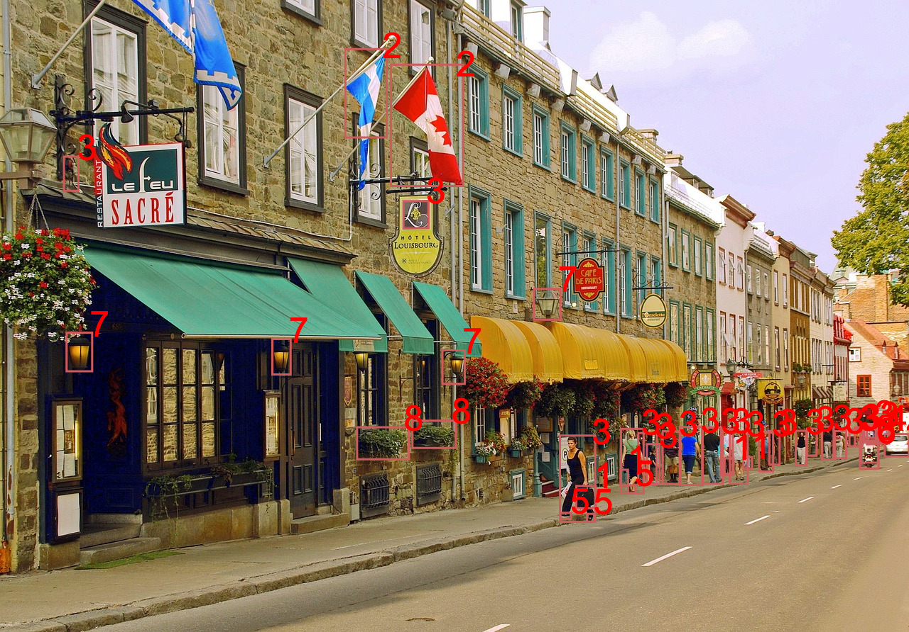
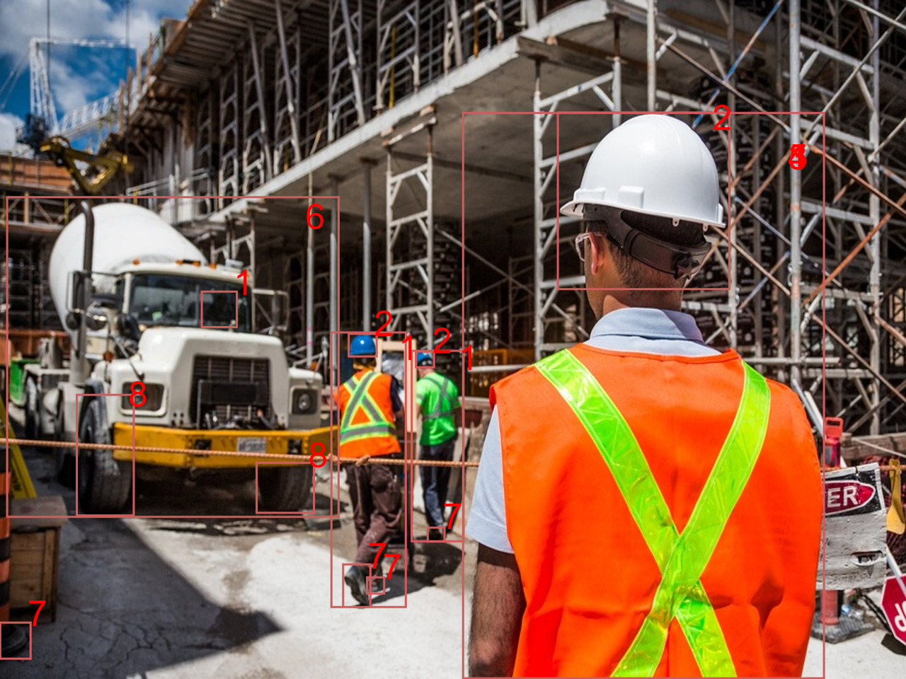
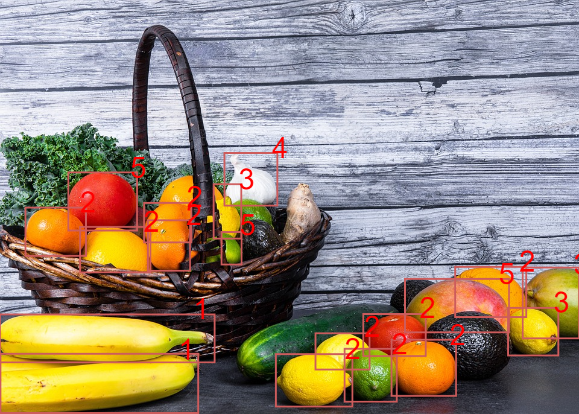

Vision par ordinateur
Sélectionnez une image
Paysage urbain
| Étiquette | Confiance |
| Ville1 | 100% |
| Route | 100% |
| Urbain | 100% |
| Sac à main1 | 99% |
| Feuillage | 98% |
| Drapeau2 | 98% |
| Trottoir | 98% |
| Étiquette | Confiance |
| Personne3 | 97% |
| Voiture4 | 97% |
| Chaussure5 | 92% |
| Moto6 | 92% |
| Lampe7 | 74% |
| Plante8 | 70% |
| Centre ville | 57% |
Chantier de construction
| Étiquette | Confiance |
| Personne3 | 100% |
| Casque de sécurité 2 | 100% |
| Construction 3 | 76% |
| Adulte 4 | 99% |
| Homme 5 | 99% |
| Étiquette | Confiance |
| Camion 6 | 88% |
| Chaussures 7 | 88% |
| Roue 8 | 83% |
| Lunettes de protection | 94% |
| Panneau de signalisation | 31% |
Fruits et légumes
| Étiquette | Confiance |
| Banane 1 | 100% |
| Fruit | 100% |
| Orange 2 | 85% |
| Poire 3 | 84% |
| Poulet 4 | 78% |
| Citron | 62% |
| Pomme 5 | 50% |
| Étiquette | Confiance |
| Panier | 55% |
| Pamplemousse | 53% |
| Poivron | 53% |
| Citron vert | 52% |
| Courgette | 52% |
| Gingembre | 51% |
| Avocat | 51% |